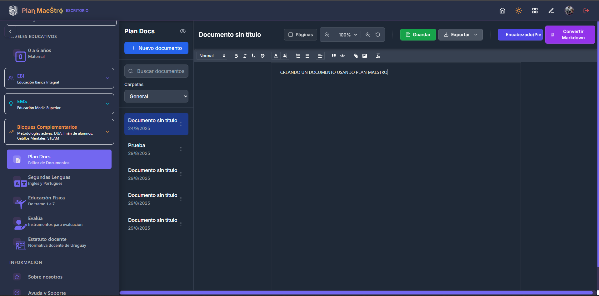
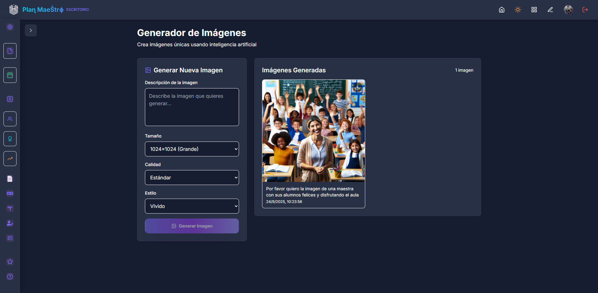
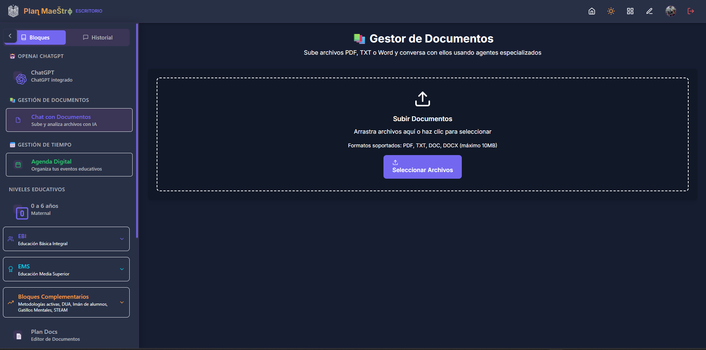
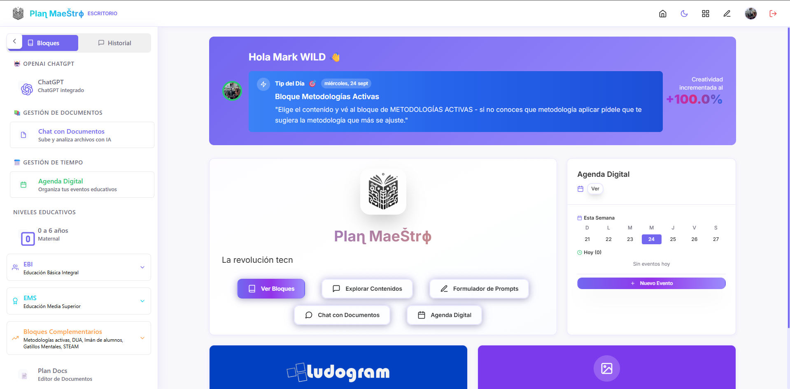
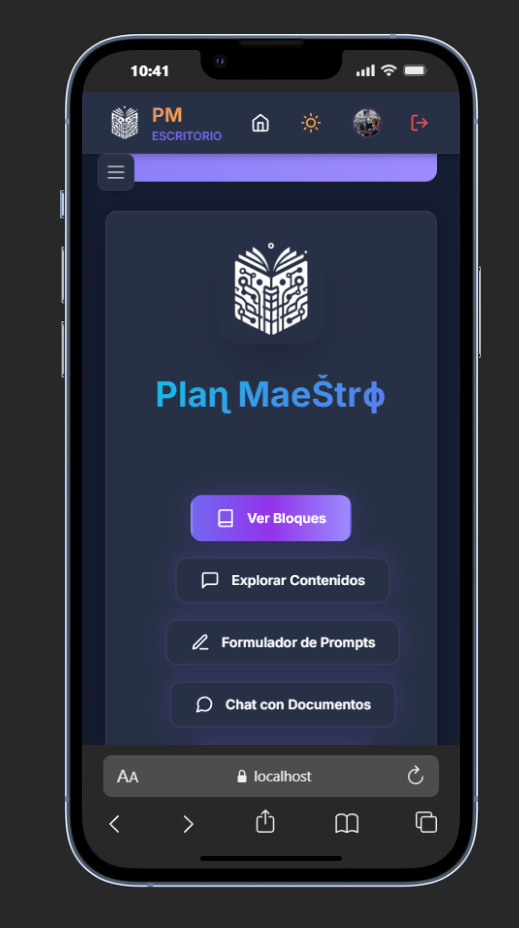

Todas las funcionalidades de Plan Maestro PRIME
Dashboard Principal
Centro de control con vista general de todas las herramientas

Agenda y calendario integrado
Estadísticas y métricas en tiempo real
Tips diarios personalizados
Plan de Documentos
Editor avanzado de documentos con múltiples formatos de exportación

Editor de texto optimizado para escritura
Exportación a PDF, DOCX y TXT
Sistema de zoom avanzado (50%-200%)
Vista de páginas con navegación
Encabezados y pies de página personalizables
Conversión automática de Markdown
Sistema de carpetas y organización
Etiquetas y sistema de búsqueda
ChatGPT Integrado
La plataforma de IA por excelencia disponible y sin límites
Exportación a PDF, DOCX y TXT
Sin límites de uso y consultas
Versión de ChatGPT 5 ILIMITADA!
Grabador de Audio y Reproductor
Graba tus audios y reproduce los que la plataforma te produce

Graba tu prompt y espera a que la plataforma te produzca el audio y el texto
Producción de respuestas en audio simultáneas
Generador de Imágenes con IA
Crea imágenes únicas usando inteligencia artificial avanzada

Generación por descripción de texto
Múltiples tamaños (256x256 a 1024x1024)
Calidad estándar y alta definición
Estilos vívido y natural
Descarga directa de imágenes
Gestor Inteligente de Documentos
Sube y analiza documentos PDF, Word y TXT con agentes especializados

Subida de PDF, DOC, DOCX, TXT
Agentes especializados de análisis
Chat interactivo con documentos
Generación de mapas mentales
Resúmenes automáticos de contenido
Respuestas a preguntas específicas
Formulador de Prompts Educativos
Genera prompts especializados para diferentes niveles y contenidos educativos

Contenidos por tramo educativo
Espacios curriculares específicos
Unidades curriculares organizadas
Niveles de grado (EBI - EMS)
Contenidos específicos por nivel
Copiado automático al portapapeles
Sistema de Mapas Mentales
Visualización interactiva de conceptos y relaciones

Creación automática desde documentos
Interfaz interactiva y navegable
Zoom y panorámica fluida
Vista completa del mapa
Leyenda y controles integrados
Base de Datos Educativa
Contenidos curriculares completos para todos los niveles
Base de datos curricular extensa
Búsqueda avanzada de contenidos
Filtros por tramo y nivel
Organización jerárquica de contenidos
Características Técnicas
Tecnologías de vanguardia para un rendimiento óptimo


Tema oscuro/claro automático
Totalmente responsive
Bloques Educativos Especializados
Herramientas específicas para diferentes áreas educativas
EBI - EMS
Bloque STEAM
Bloque EVALÚA
Bloque IMÁN DE ALUMNOS
Ludogram
Agentes especializados